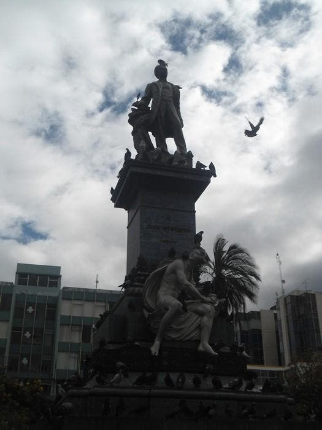

- Parque Montalvo es el parque más representativo de Ambato, está situado
en pleno centro de la ciudad, frente a la Catedral y a la Casa de Montalvo.
- Constituye un lugar de riqueza histórica y cultural ambateña.
- De arquitectura española, construido desde 1905 en el sitio de la Plaza
Matriz en el gobierno de Eloy Alfaro, terminándose e inaugurándose en 1911.
- Construido en memoria del "Cervantes de América" Don Juan Montalvo.
- Los jardines se revisten con palmas y árboles de diversas especies botánicas.
| 
|